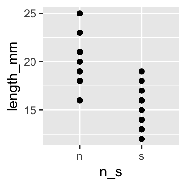
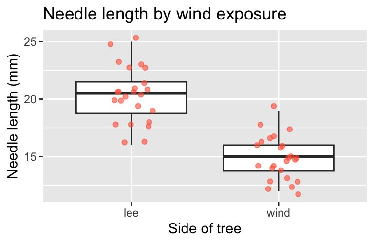

library(tidyverse)
pine_df <- read_csv("data/pine_needles.csv")Getting Started
Asking a question, meeting R, and making your first graph
Foundations
R
Graphing
A question worth testing, a project worth organizing, and a first look at R, Positron, and ggplot — all built around one pine needle experiment.
Welcome to Biostatistics
- This course teaches the whole pipeline: raw data → clean → summarize → visualize → test → report
- You do not need prior coding experience — everyone starts exactly here
- The only way to learn this is to type the code yourself and break it
Important
Getting stuck is not failing — it is the job. Every working scientist reads error messages and searches for answers every day.
Note
Today’s roadmap
- Asking a good question
- Organizing a project
- Meeting R and Positron
- Loading data and your first plot
Part 1 · Asking a Good Question
What makes something science?
- Science makes predictions and tests them with a falsifiable approach — statistics
- A claim that could never be shown wrong is not testable, and not science
Example:
- “Needles on the sheltered side of a tree are longer” — testable ✅
- “The forest decides needle length” — not testable ❌
Note
📖 New word
Falsifiable = a prediction that could, in principle, be proven wrong. A good hypothesis is one you could disprove.
Two ways of reasoning toward that question
Inductive (specific → general)

You measure needles on a few trees, notice a pattern, and generalize: “needle length seems to vary with side of tree.”
Note
Weakness: the pattern held in your sample — it is not guaranteed to hold everywhere.
Deductive (general → specific)

You start from a general rule — “exposure affects needle length” — and predict what a new tree should show, then check.
Note
Weakness: only as strong as the general rule you started from.
Tip
In practice we do both, back and forth — notice a pattern (induction), propose a rule, then test it on new data (deduction).
Our class question
Pine needles on the north/sheltered (lee) side of a tree vs. the south/exposed (windward) side:
- H₀ (null): No difference in needle length between the two sides.
- Hₐ (alternate): Needle length differs between the two sides.
Note
📖 New words
- H₀ — the “nothing is happening” claim
- Hₐ — the claim we suspect might be true
- Note: Hₐ does not say which side is longer — that would be a prediction, a stronger, riskier claim

Designing a defensible sample
- Can we test this with needles from one tree? No — that tree could just happen to have short needles. Treating many needles from one tree as if they were independent replicates is called pseudoreplication (Hurlbert 1984).
- The tree — not the needle — is the unit of replication. We need needles from many trees, sampled the same way each time.
- Randomize which trees and branches you sample, so your own bias doesn’t sneak into the data.
Important
Dependent vs. independent variable
- Independent (X): side of tree — what we group by
- Dependent (Y): needle length — what we measure
Tip
🖐 Today in the field
Each group collects needles from the lee side and the windward side of the same trees, using one agreed-on method — same height, same “mature needle” definition, same spot on the branch.
Part 2 · Organizing Your Project
Data is the raw material — treat it that way
- Decide your variable names and units before you collect anything — this is a controlled vocabulary
- Example:
length_mm, notLength (mm)— no spaces, no units hidden in the header text, all lowercase - Plan where data goes the moment you collect it — do not let it pile up in email or texts
Note
✅ Key idea
A few minutes of naming discipline today saves hours of confusion in Module 2, when we clean messy data.
Tip
Controlled vocabulary example
| Bad | Good |
|---|---|
Needle Length |
length_mm |
N/S |
n_s |
Wind Exposure |
wind |
One folder per project
pine_project/
├── data/ ← raw files, never overwritten
├── scripts/ ← your .R code
└── figures/ ← plots you save- Open this folder as your workspace in Positron (File → Open Folder…)
- Every file path then becomes relative — no more
C:/Users/.../Desktop/final_FINAL2.xlsx
Note
✅ Key idea
Keep raw data untouched. R writes new, processed files — so you can always trace your steps back to the original numbers.
Note
📖 New word
Metadata = data about your data: who collected it, when, how, with what instrument. Without it, data are nearly useless — even to future-you.
Tip
🖐 Preview
Tidy data — one row per observation, one column per variable — is the target we’re organizing toward. We’ll formalize this in Module 2.
Part 3 · Meet R and Positron
R is the engine, Positron is the dashboard
- R — a free language for data and statistics
- Positron — the editor (IDE) you drive it through
- Four panes you’ll use constantly:
| Pane | Where | What it does |
|---|---|---|
| Editor | top-left | your scripts live here |
| Console | bottom | where code actually runs |
| Environment | right | everything you’ve stored |
| Plots / Files | right | figures and project files |
Note
📖 New word
IDE = Integrated Development Environment. R is the car engine; Positron is the seat, wheel, and dashboard.
R as a calculator, and storing values
Type math into the console and press Enter:
3 + 5
12 / 7
2 ^ 10To keep a value, give it a name with the assignment operator <-:
x <- 7 # store 7 under the name x
x # read it back
x * 2 # use it in math
Warning
⚠️ Watch out!
R is case-sensitive: x and X are different objects. Use <-, not =, to assign.
Note
📖 New word
Object = a named container holding a value. Look for it appear in the Environment pane the moment you create it.
Names, comments, and functions
- Use
lower_snake_case:needle_length, notx2orNeedleLength - Anything after
#is a comment — a note for humans, ignored by R
# average of four needle lengths, in mm
needle_length <- c(20, 21, 23, 25)
mean(needle_length) # a function callA function takes arguments in () and returns a result. Stuck? Ask for help:
?mean
args(mean)
Tip
🖐 Try it yourself
Predict what round(3.14159, 2) returns before you run it.
Note
📖 New words
- Comment — ignored by R, read by humans
- Argument — an input handed to a function
- Function — a named, reusable operation
Vectors, data types, and scripts
A vector is a row of values made with c() — a spreadsheet column is really just a vector:
length_mm <- c(20, 21, 23, 25) # numeric
side <- c("n", "s") # character — needs quotesThe console forgets. A script (.R file) remembers:
- File → New File → R File, save it, run lines with Ctrl/Cmd+Enter
Warning
⚠️ Watch out!
Without quotes, s means “find an object called s,” not the text “s.” R will error if no such object exists.
Note
✅ Key idea
Console = scratch paper. Script = the lab notebook you keep and rerun.
Packages — extending what R can do
Install once, in the console:
install.packages("tidyverse")Load every session, at the top of every script:
library(tidyverse) # wrangling + ggplot2
Warning
⚠️ Watch out!
“could not find function…” almost always means you forgot the library() line for that session.
Note
📖 New words
- Package — the installed toolbox (once)
- Library — loading it for today’s session (every time)
Part 4 · Load Data and Make Your First Plot
Bring the data in
Put the file in data/, then:
Note
✅ Key idea
read_csv() comes free with library(tidyverse). Your file’s first row becomes the column names in R.
Note
Our columns
n_s—"n"(sheltered/lee) or"s"(exposed/windward)wind—"lee"or"wind", same grouping said a different waylength_mm— needle length in millimeters
Look before you trust it
glimpse(pine_df)Rows: 48
Columns: 6
$ date <chr> "3/20/25", "3/20/25", "3/20/25", "3/20/25", "3/20/25", "3/20…
$ group <chr> "cephalopods", "cephalopods", "cephalopods", "cephalopods", …
$ n_s <chr> "n", "n", "n", "n", "n", "n", "s", "s", "s", "s", "s", "s", …
$ wind <chr> "lee", "lee", "lee", "lee", "lee", "lee", "wind", "wind", "w…
$ tree_no <dbl> 1, 1, 1, 1, 1, 1, 1, 1, 1, 1, 1, 1, 2, 2, 2, 2, 2, 2, 2, 2, …
$ length_mm <dbl> 20, 21, 23, 25, 21, 16, 15, 16, 14, 17, 13, 15, 19, 18, 20, …dim(pine_df)[1] 48 6
Tip
🖐 Notice
n_s and wind always travel together — n with lee, s with wind. Two columns encoding the same grouping. Useful redundancy, or something to simplify? We’ll revisit this in Module 2.
Warning
⚠️ Watch out!
If a number column shows as <chr> in glimpse(), a stray letter or comma is hiding in that column.
Your first plot: ggplot, built in layers
Every ggplot needs three things, joined with +:
- data — which data frame
- aes() — which columns map to x and y
- geom — how to draw it
ggplot(pine_df, aes(x = wind, y = length_mm)) +
geom_point()
Warning
⚠️ Watch out!
+ sits at the end of a line, never the start.
Note
✅ Key idea
Seeing your data is the single most important habit in this course — before you summarize or test anything, plot it.
One layer at a time
ggplot(pine_df, aes(x = wind, y = length_mm)) +
geom_boxplot() +
geom_jitter(width = 0.15, alpha = 0.6, color = "tomato") +
labs(x = "Side of tree",
y = "Needle length (mm)",
title = "Needle length by wind exposure")
Tip
🖐 Try it yourself
Swap wind for group. What does that plot tell you instead?
Note
✅ Key idea
A boxplot shows the summary; the jittered points show every real value underneath it. Show both when you can.
Save your plot
needle_plot <- ggplot(pine_df, aes(x = wind, y = length_mm)) +
geom_boxplot() +
geom_jitter(width = 0.15, alpha = 0.6, color = "tomato") +
labs(x = "Side of tree", y = "Needle length (mm)")
ggsave("figures/needle_length.png",
plot = needle_plot,
width = 3, height = 3, units = "in", dpi = 300)
Warning
⚠️ Watch out!
ggsave() wants the filename first, then plot =. Always use dpi = 300 — print/poster quality.
Note
📖 File format tip
Save figures as PNG for reports and submissions.
Wrap-up
Today you:
- Turned a question into a testable H₀ / Hₐ
- Organized a project folder with data/scripts/figures
- Ran your first R code — objects, functions, vectors, packages
- Loaded real data and made — and saved — your first
ggplot
Tip
🖐 Before next class
Finish the worksheet: load pine_needles.csv, run glimpse(), and make one more plot — length_mm by n_s this time. Save it to figures/.
Note
Up next — Module 2
filter(),select(),mutate(),arrange()- Cleaning a genuinely messy version of this dataset
- The pipe
|>and building a pipeline
Getting unstuck
When code breaks — and it will, that is normal:
- Read the error message out loud; it usually names the line
- Check the usual suspects:
library(tidyverse)loaded? Spelling? A missing)or+at the start of a line? ?function_nameopens the help page- Bring the exact error (copy-paste it) to class or office hours
Note
✅ Key idea
Every working scientist googles error messages daily. Getting stuck is not failing — it is the job.